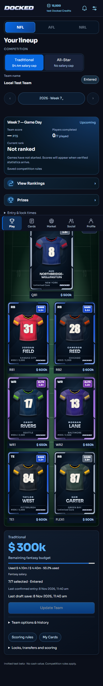
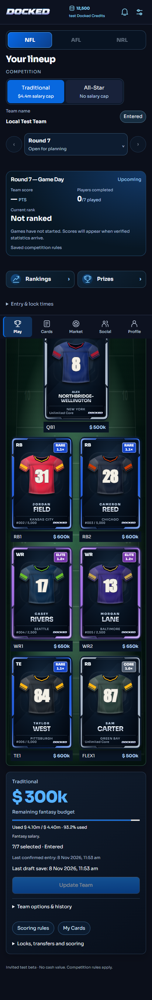
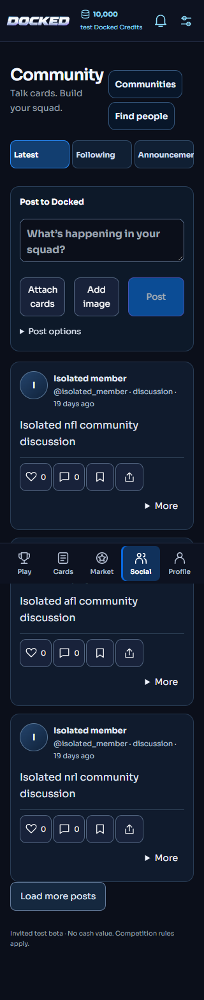
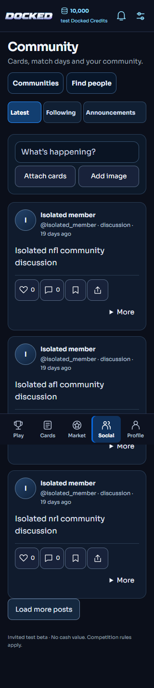
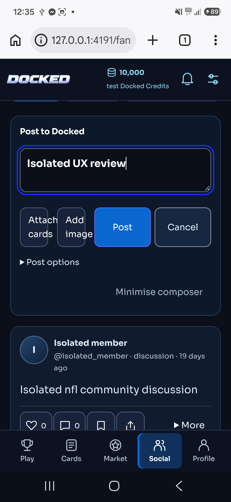
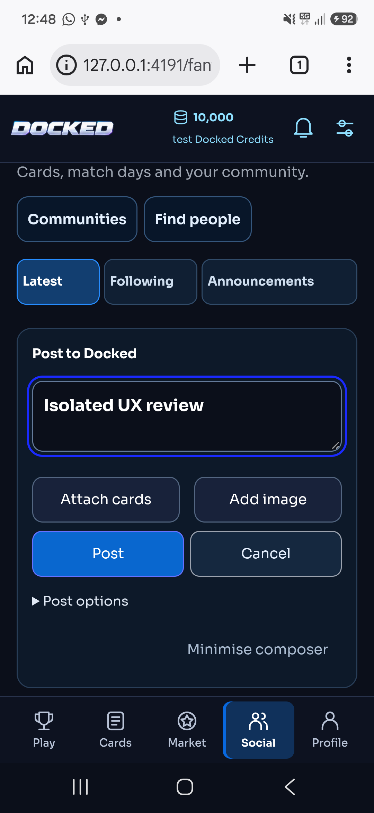

Candidate for owner review — not deployed. Existing artwork, reveal effects, audio and commercial controls are preserved. Screens below use isolated synthetic data.
Read the complete release report · Round 8 investigation
| Measured scenario | Before | Candidate |
|---|---|---|
| Social card-picker DOM nodes | 19,448 | 2,604 |
| Idle composer height | 241–259px | 124px |
| Wallet reads for one resume burst | 3 | 1 |
| Marketplace 12-second read | Discarded by polling | Listing displayed |
These are controlled component measurements, not a claimed Production latency improvement. The remaining server-side Play bottleneck is documented in the report.




Chrome over USB to the isolated candidate. This is not installed Production WebView acceptance.


The reusable pack fixture keeps a nine-card preview title when set to three cards. The displayed progress and original receipt correctly contain three. No customer pack or purchase is involved.